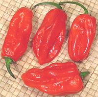

Chili Heat & Tolerance

Lets make one thing clear right up front. The hotness of natural chilis
can do you no real harm. The pain is fake - it's a nerve receptor thing
and no actual damage is being done. Even the incendiary Red Habaneros in
the photo will do no actual harm. Birds, lacking the nerve receptor found
in mammals, detect no heat at all and feast on chilis.
Lets also be clear that recently developed chilis with hotness over
1,000,000 scoville units, eaten alone, cause the body to do damage to
itself. The nervous system is so convinced there is fire it will
blister the mucous membranes to protect the flesh under them.
Persons little exposed to chili hotness will experience mostly pain,
which will mask flavors and decrease enjoyment of the food the chilis are
included in. Further, the following morning hapless neophytes will
experience "afterburn", reminding them of previous suffering.
With frequent exposure to chili heat, the sensitivity of the nerve
receptors decreases. A whole new realm of flavor and sensation opens
up to those who have paid their dues. New digestive enzymes develop and
"afterburn" is just a faded memory.
An excellent way to build up tolerance is to have your lunches at a
Thai restaurant. Keep increasing the amount of the table condiments you
use until you can order stuff "extra spicy" and enjoy it.
Considerable information, including heat scale and details of specific
chili varieties will be found on our
Chilis page.
Experience aside, even the most hardened chili hound must observe
certain precautions. Chili heat can be intensely painful, even
debilitating, but fortunately the pain goes away fairly quickly.
- When working with chilis, take great care not to touch sensitive
areas, particularly eyes and genitals (yours or anyone else's) until
your hands have been thoroughly washed with soap or cleanser. The
hotness is oil soluble, so just a water rinse won't do it.
- After working with the chilis, not only wash your hands, but also knives
and other tools used, as well as the cutting surface, or you may be in for
a surprise.
- The hotness of chilis varies tremendously. Always sample before going
ahead with a recipe. The same type of chili bought from the same bin at
the same store can be quite different than it was last week. Some chilis
are deliberately atypical. Jalapenos with no heat have been developed so
pseudo-Mexican restaurants in New York can advertise "real Jalapeno
peppers" without devastating the populace.
- The hotness is not from the seeds nor the shell, but from oil droplets
on the membranes the seeds are attached to. You can greatly reduce the
hotness of a chili by carefully scraping out the membranes. Serranos, for
instance, can easily be turned from fiery to blah this way, so don't just
automatically scrape or you may be disappointed. Hotness is a major point
of using chilis.
- To sample the hotness of a chili you can start munching from the tip,
which will be very mild, and working up. Another method is to cut a very
thin slice from just above the center of the chili and munch it. This
test is definitive.
- When serving a mixed crowd, it's best to make the dishes rather mild,
and provide hot condiments or sauces for the more experienced. Thai
Chili Vinegar Sauce and other Southeast Asian dips and sauces are
excellent for this.
cp_heat 100124 - www.clovegarden.com
©Andrew Grygus - agryg@clovegarden.com - Photos
on this page not otherwise credited © cg1
- Linking to and non-commercial use of this page permitted